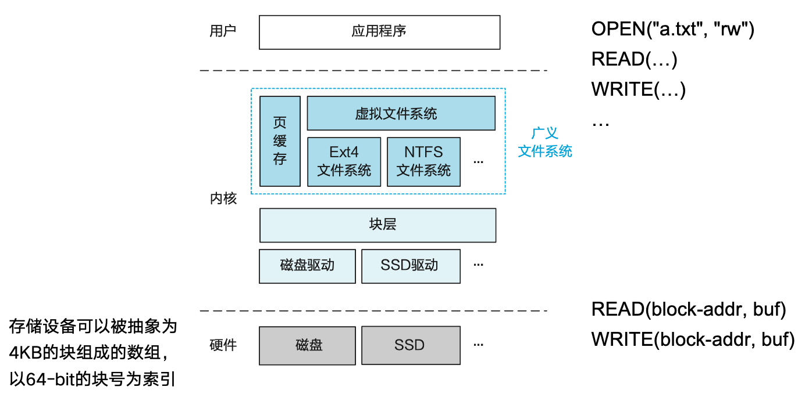
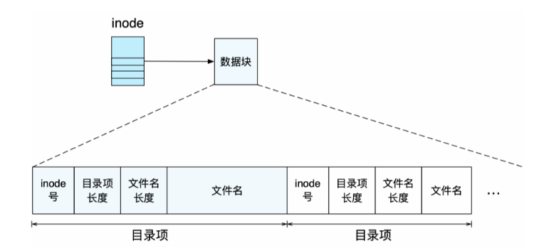
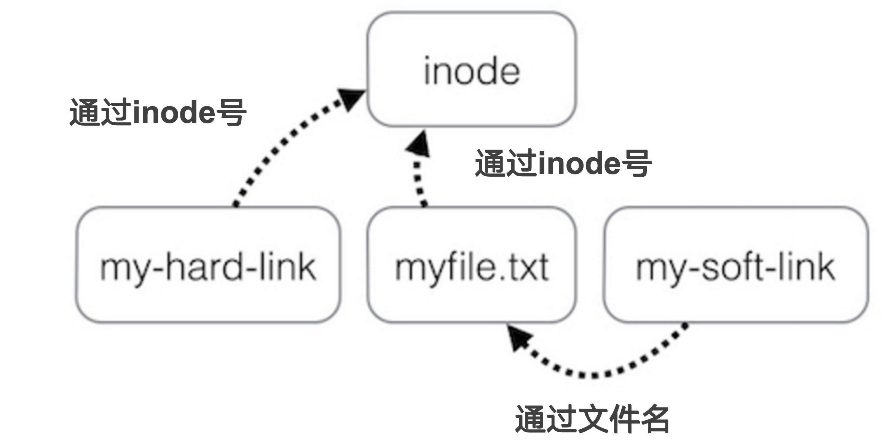
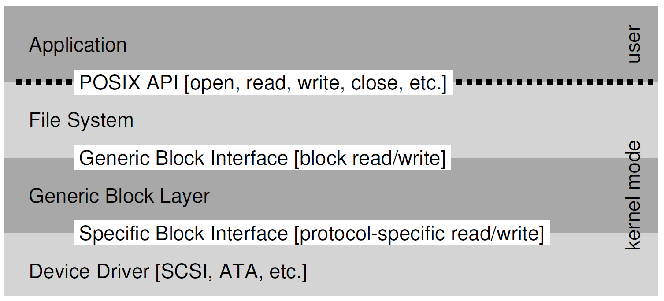

操作系统 SJTU 版(4)：文件管理
Last updated on January 9, 2026 pm
这是《操作系统》SJTU-CS3601 课程的课程笔记系列。本文整理部分为“第 4 部分：文件管理”。
Lecture 15: 文件系统
- 文件：对数据的一种抽象
- 定义：有名字且持久化的一段数据
- 文件系统：提供了一组操作文件的 API
- UNIX 文件系统的 API：
- OPEN, READ, WRITE, SEEK, CLOSE
- FSYNC
- STAT, CHMOD, CHOWN
- RENAME, LINK, UNLINK, SYMLINK
- MKDIR, CHDIR, CHROOT
- MOUNT, UNMOUNT
- 文件系统的位置：

Inode：文件的元数据
-
inode：index node，记录文件多个磁盘块的位置
- 记录多个磁盘块号
- 头部记录文件 size 信息
- 每个文件对应一个 inode
- 称为文件元数据（Metadata）
-
文件读写操作：
- 给定 inode 和文件内偏移（offset）
- 根据 offset 计算出对应的磁盘块号
- 若 offset 超出 size 则返回错误
-
inode 文件系统的存储布局：
- inode 表：记录所有 inode
- 可以看成 inode 的大数组
- 每个 inode 使用 inode 号作为索引
- 此时，inode 号即为文件名
- inode 分配信息（位图）：
- 记录哪些 inode 已分配，哪些空闲
- 超级块：Super Block
- 记录磁盘块的大小、其他信息的起始磁盘块位置，等等
- 是整个文件系统的元数据
- inode 表：记录所有 inode

-
inode 文件系统的基本操作：
- 加载文件系统：
- 首先读取超级块，然后找到其他信息
- 创建新文件：
- 根据 inode 分配信息找到空闲 inode，将 inode 对应的 bit 设置为 1
- 返回 inode 在 inode 表中的索引，作为文件名
- 查找文件（根据 inode 号）：
- 在 inode 表中根据 inode 号定位该 inode
- 删除文件：
- 在 inode 分配表中，将该 inode 对应的 bit 设置为 0
- 加载文件系统：
-
多级 inode：解决单级 inode 过大的问题
- 引入索引块：指向数据块；以及二级索引块：指向索引块；…
- 索引块（包括二级索引块）不在 inode 表的存储区域，而是在数据区域
- 一个多级 inode 占用的空间很少
- 支持更大的文件：可以启用三级索引，甚至四级索引

目录：也是一种文件
- inode 与文件名：
- inode 本身已经包含了一个文件的所有信息
- 可以使用 inode 号（inode 表的索引）作为文件名
- 给定一个 inode 号，就可以访问文件的所有数据
- inode 作为文件名的缺点：
- 名字很难记住，不够 user-friendly
- 名字依赖于 inode 表位置的名字（一旦改变了位置，就必须改变文件名）
- inode 本身已经包含了一个文件的所有信息
- 字符串的文件名：
- 以字符串作为文件名的好处：
- 在操作文件时，将文件的元数据隐藏起来，用户无需感知
- 不依赖特定的存储设备
- 实现字符串文件名到 inode 号的映射：
- 使用映射表，记录字符串到 inode 号的映射
- 将该表保存在一类特殊的文件中，称为目录文件
- 目录本身也是一个文件，同样有 inode
- 复用 inode 机制来实现目录
- 以字符串作为文件名的好处：
- 目录文件与目录项：
- 目录中的每条映射称为一个目录项
- 每一条目录项记录了一个 inode 号与文件名字符串的映射
- 一个目录可以记录很多目录项
- 目录文件的大小（占用空间）与其记录的文件大小无关
- 目录支持查找操作：
- 给定一个目录文件和字符串
- 在目录文件中查找字符串，并返回对应的 inode
- 目录中的每条映射称为一个目录项

-
目录的递归与根目录：
- 目录中可以记录子目录
- 因为目录本身也是一个文件
- 通过“/”来分割父目录和子目录
- 最顶端的目录没有目录名（文件名）
- 被称为“根目录”（root）
- 根目录没有文件名，在“/”的前面什么都没有
- 绝对路径和相对路径
- 绝对路径：如“/home/alice/test.md”
- 相对路径：如“./test.md”
- 目录中可以记录子目录
-
文件的查找过程：

硬链接与软链接
（硬）链接：Link
-
创建（硬）链接：Linux 中的
ln命令 -
LINK：LINK("Mail/inbox/new-assignment", "assignment")- 将严格的层次结构（树）变成有向图
- 用户不能为目录创建 link，否则会出现环
- 不同的文件名可以指向同一个 inode 号
- 将严格的层次结构（树）变成有向图
-
UNLINK：删除（硬）链接- 删掉从文件名到 inode 号的绑定关系
- 如果 UNLINK 最后一个绑定，则把 inode 和对应的 blocks 放到 free-list
- 每个文件都需要一个 reference counter
-
引用计数器（Reference count）：一个 inode 可以绑定多个文件名，LINK 时 +1, UNLINK 时 -1
- 当 reference count 为 0 时，文件被删除
- 不允许出现环
- 除了 ‘.’ 和 ‘…’
- 用来表明当前目录和上一层目录而不需要知道它们实际的名字
软链接（符号链接）
-
如何在一个磁盘上建立指向另一个磁盘的 Link
- 无法，因为不同磁盘的 inode 命名空间是不同的（因为文件系统不同）
-
引入软链接（符号链接）: soft link (symbolic link)
- SYMLINK
- 增加一种新的 inode 类型
-
创建软链接：Linux 中的
ln -s命令 -
硬链接和软链接的对比：

- 文件系统的一些细节：
- 文件名并不是文件的一部分
- 文件名不是文件的数据，也不是文件的元数据（inode）
- 文件名是目录的数据，是文件系统的元数据
- 一个 inode 可以有多个文件名（硬链接）
- 每个硬链接的地位都是相同的
- 文件名就是硬链接（而不是一个文件名，一个链接名）
- 目录所占磁盘空间通常是很小的
- 目录仅仅负责记录文件名到 inode 号的映射
- "文件夹"这个名字有一定的误导性
- 文件名并不是文件的一部分
文件系统 API
-
文件系统的系统调用 API：
- CHDIR, MKDIR, RMDIR
- CREAT, LINK, UNLINK, RENAME
- SYMLINK
- MOUNT, UNMOUNT
- OPEN, READ, WRITE, CLOSE
- SYNC
-
文件系统的两类元数据：
- 磁盘上文件的元数据：静态的、在磁盘中
- 被打开文件的元数据：动态的、在内存中
-
文件的元数据 （磁盘中）：
- 拥有者/所在组 ID：拥有该 inode 的 用户 ID 和 组 ID
- 权限的类型：
- 拥有者、所在组、其他
- 读、写、执行
- 时间戳
- 最后一次访问 (如：READ 操作)
- 最后一次修改 (如：WRITE 操作)
- 最后一次 inode 更新 (如：LINK 操作)
-
被打开文件的元数据（内存中）：
- 整个系统维护了一个
file_table- 记录了所有打开的文件的信息
- 包括：文件游标（file cursor）、引用数（ref_count）
- 父子进程间可以共享文件游标
- 每个进程维护了一个
fd_table- 记录了该进程每个 fd 所对应文件在 file_table 中的索引
- 整个系统维护了一个
-
文件游标 Cursor：
- 文件游标：记录了一个文件中下一次操作的位置
- 可以通过 SEEK 操作修改
- 情况 1: 共享游标
- 父进程将 fd 传递给子进程
- UNIX 中，子进程会继承父进程所有已经打开的 fd
- 允许父子进程共享同一个文件
- 父进程将 fd 传递给子进程
- 情况 2: 非共享游标
- 两个不同的进程打开同一个文件
- 文件游标：记录了一个文件中下一次操作的位置

-
write()：与read()类似- 可能需要分配新的 block
- 更新 inode 的 size 和 mtime
-
close()：- 释放 fd_table 中的相关项
- 减小 file table 中相关项的 refcnt
- 如果 file table 中相关项 refcnt 为 0，则将其释放
-
删除一个打开的文件：inode 引用数变成 0，但不会被立即释放和删除
- 直到前一个进程调用 close 将其关闭
- 在 Windows 上，则通过“禁止删除打开的文件”实现类似效果
-
fsync()：- Block cache：缓存了最近被使用的磁盘块
- 缓存缺失时，从磁盘中读取
- 推迟数据向磁盘的写入
- 寻求机会批量写入，提升性能
- 问题：如果在写入前发生故障，可能会造成不一致
- SYNC：保证对文件的所有修改被写入到存储设备
- Block cache：缓存了最近被使用的磁盘块
文件系统的崩溃一致性
-
文件系统的崩溃一致性：
- 文件系统中保存了多种数据结构
- 各种数据结构之间存在依赖关系与一致性要求
- 突发状况（崩溃）可能会造成这些一致性被打破
-
用户期望：重启并恢复后
- 维护文件系统数据结构的内部的不变量
- 仅有最近的一些操作没有被保存到磁盘中
- 没有顺序的异常
-
方法1：同步元数据写+ fsck
- 同步元数据写：每次元数据写入后，运行
sync()保证更新后的元数据入盘 fsck的步骤：非正常重启后，运行fsck检查磁盘，具体步骤：- 检查 superblock
- 例如，保证文件系统大小大于已分配的磁盘块总和
- 如果出错，则尝试使用superblock的备份
- 检查空闲的 block
- 扫描所有 inode 的所有包含的磁盘块
- 用扫描结果来检验磁盘块的 bitmap
- 对 inode bitmap 也用类似方法
- 检查 inode 的状态
- 检查类型：如普通文件、目录、符号链接等
- 若类型错误，则清除掉inode以及对应的bitmap
- 检查 inode 链接
- 扫描整个文件系统树，核对文件链接的数量
- 如果某个 inode 存在但不在任何一个目录，则放到 /lost+found
- 检查重复磁盘块
- 例如，两个 inode 指向同一个磁盘块
- 如果一个 inode 明显有问题则删掉，否则复制磁盘块一边给一个
- 检查坏的磁盘块 ID
- 例如，指向超出磁盘空间的ID
- 检查目录
- 这是 fsck 对数据有更多语义的唯一的一种文件
- 保证 . 和 … 是位于头部的目录项
- 保证目录的链接数只能是 1 个
- 保证目录中不会有相同的文件名
- 检查 superblock
- 问题：太慢
- fsck 时间与磁盘的大小成比例增长
- 同步元数据写导致创建文件等操作非常慢
- 同步元数据写：每次元数据写入后，运行
-
方法2：日志（Journaling）
- 方法：
- 在进行修改之前，先将修改记录到日志中
- 例如，如何修改 block-bitmap、如何修改 data
- 所有要进行的修改都记录完毕后，提交日志
- 确定日志落盘后，再修改数据和元数据
- 修改完成后，删除日志
- 在进行修改之前，先将修改记录到日志中
- Ext4 的日志：以 Ordered mode 为例
- 先写数据（原本的文件位置），再写元数据（日志）
- 两次 Flush 保证顺序
- 崩溃后的恢复方法：
- 启动后首先检查日志区域
- 若没有任何日志记录，则无需恢复
- 扫描所有已经 COMMIT 的事务
- 若没有 COMMIT 的事务，则无需恢复
- 对已经 COMMIT 的事务，将元数据从日志区写到原本位置
- 完成后清空日志区域
- 启动后首先检查日志区域
- 方法：
Lecture 16: 设备管理与驱动
标准 I/O 协议
- OS 的分层设计：

- 设备最基本的抽象：

-
传统 I/O 流程：
1
2
3
4
5
6
7While(STATUS == BUSY)
; // 不断等待，直到设备不再忙碌
Write data to DATA register and address to ADDRESS register
Write command to COMMAND register
（此时设备开始工作，并执行 COMMAND 对应操作）
While(STATUS == BUSY)
; // 再次等待，直到设备响应完请求- 轮询：CPU 反复读取设备的状态寄存器，直到确认设备可以接受新的命令
- 如果设备是磁盘，则需要若干次写操作才能将磁盘块传输到设备中
- 当 CPU 参与数据的搬移时，我们称之为 programmed I/O (PIO)
- OS 向设备的命令寄存器写入命令
- 设备获悉数据已经就绪，随即设备开始工作，执行 OS 发送的命令
- OS 再次通过不断轮询状态寄存器，判断设备是否完成工作
- 最后，OS 会收到设备返回的 success 或 failure 状态码
-
问题：轮询消耗太多 CPU 时间
- 解法：使用中断
中断
-
中断：提高 CPU 利用率
- OS 向设备发送一个请求，随后令 I/O 进程睡眠，切换到其他任务
- 此时进程处于 WAITING 状态
- 设备完成 I/O 命令后，触发硬件中断
- CPU 跳转到 OS 预先注册好的中断处理程序
- Interrupt service routine / ISR 或 interrupt handler
- 中断处理程序是一段运行在内核态的代码，负责响应设备中断
- 例如，读取设备数据，亦或是读取设备返回的状态码，进而唤醒等待 I/O 的进程，完成后续工作
- 局限性：只适用于慢速设备
- OS 向设备发送一个请求，随后令 I/O 进程睡眠，切换到其他任务
-
中断的问题：活锁
- 网络场景下的中断使用（网卡设备）
- 当每个网络包到来时都发送中断请求时，OS 可能进入活锁
- 活锁：CPU 只顾着响应中断，无法调度用户进程和处理中断发来的数据
- 解决方案：合二为一（中断+轮询），兼顾各方优势
- 默认使用中断
- 网络中断发生后，使用轮询处理后续达到的网络包
- 如果没有更多中断，或轮询中断超过时间限制，则回到中断模式
- 该方案在 Linux 网络驱动中称为 NAPI (New API)
- 网络场景下的中断使用（网卡设备）
-
优化：中断合并（Interrupt Coalescing）
- 设备在发送中断前，需要等待一小段时间
- 在等待期间，其他中断可能也会马上到来，因此多个中断合并（merged）为同一个中断，进而降低频繁中断带来的开销
- 注意：等待过长时间会导致中断响应时延增加，这是系统中常见的“折衷”（trade-off）
设备交互: PIO / MMIO
-
方法1：通过 I/O 指令进行 PIO (Port I/O)
- 例如，x86 平台的 IN 和 OUT 指令
- I/O 端口：不同于物理内存空间的另一命名空间
- 必须以特权模式执行（内核态）
- 只有 OS 可以和直接和设备交互
-
方法2：内存映射 I/O（Memory-mapped I/O, MMIO）
- 使用访存的 LOAD 和 STORE 指令，直接访问 I/O 模块的寄存器和缓冲区
- 和内存的读写访问相同
- 内存地址被 I/O 设备位置信息所重载
- 为总线模块提供统一接口
- MMU 将物理地址（即总线地址）转换为虚拟地址
- I/O 模块负责将总线地址转换为设备的寄存器地址
- 可以以非特权模式下执行（用户态）
- ARM 和 x86 都支持
- MMIO 地址应使用 Volatile 关键字
- 使用访存的 LOAD 和 STORE 指令，直接访问 I/O 模块的寄存器和缓冲区
-
DPDK：用户态网络栈
- 用户态网络设备管理
- 内核将网卡 MMIO 区域映射至用户虚拟地址空间
- 用户态运行网卡驱动与网络栈
- 显著提升网络性能
- 减少数据拷贝
- 去除特权级切换
- 用户态网络设备管理
更高效的数据移动: DMA / IOMMU
-
直接内存访问：DMA（Direct Memory Access）
- CPU 向磁盘控制器发送“读”指令，一次读取一大块数据
- “读”指令中包含了目标数据在内存中的地址
- 磁盘控制器将数据直接读取到磁盘的内存缓冲区
- 直接读取物理内存中的目标数据
- 不需要 CPU 的参与
- CPU 向磁盘控制器发送“读”指令，一次读取一大块数据
-
DMA 的优点：
- 减轻 CPU 负载：执行其他程序
- 减少传输次数：
- 原先有 2 次：设备→CPU，CPU→内存
- 现在：设备→内存
- 可以更好地支持“长消息”：需要总线支持
- 分摊总线协议开销：单次操作包括获取总线、传输、释放总线
-
CPU 访问设备的方式小结：
- Load/Store 指令（ARM）
- 用于CPU读写内存
- 作用于物理地址空间
- MMIO 操作（x86/ARM 等）
- 将设备寄存器映射到物理地址空间
- 页表再将物理地址映射为虚拟地址
- DMA
- 设备使用物理地址访问内存
- Load/Store 指令（ARM）

-
DMA 的安全性问题：设备可通过 DMA 访问任意物理内存
- 错误地址访问
- 误读：设备操作出错、数据泄露等
- 误写：系统崩溃，关键数据丢失等
- 恶意地址访问
- 恶意设备、恶意用户态驱动：可发起任意DMA请求
- 应用攻击：应用挟持、应用数据窃取等
- 内核攻击：内核代码注入，内核数据窃取等
- 错误地址访问
-
IOMMU：为 I/O 设备做地址翻译，避免设备直接使用物理地址访问内存
- 设备 DMA 使用 IOVA，由 IOMMU 翻译为 PA（实际的物理地址）
- 使用 IOTLB 优化 IOMMU 地址翻译流程
- 广泛用于 DMA 隔离：用户态驱动、虚拟化等

I/O 子系统
-
I/O 子系统的必要性：
- 数以千计的设备类型，个性千差万别
- 如何标准化设备接口？
- 设备的不可靠性：
- 介质失效或传输错误
- 如何提供可靠性保证？
- 设备的不可预测性和慢速：
- 如果不清楚设备的具体表现，该如何管理它们？
- I/O 子系统必须能处理好这些差别
- 高速设备：最小化开销
- 慢速设备：避免浪费 CPU 时间盲目等待
- 数以千计的设备类型，个性千差万别
-
I/O 子系统的目标：
- 提供统一接口，涵盖不同设备
- 如下代码对各种设备通用：
1
2
3
4
5FILE fd = fopen(“/dev/something”, “rw”);
for (int i = 0; i < 10; i++) {
fprintf(fd, “Count %d\n”,i);
}
close(fd); - 原因：设备代码（即“驱动程序”）实现了标准接口
- 如下代码对各种设备通用：
- 提供 I/O 硬件的抽象层
- 管理硬件资源；隐藏硬件细节
- 提供统一接口，涵盖不同设备
-
三类设备接口：
- 字符设备
- 例子：键盘/鼠标，串口，部分 USB 设备等
- 串行访问，每次一个字符
- I/O 命令：
get(),put()等 - 通常使用文件系统接口进行交互：
open(),read(),write(),close()
- 例子：键盘/鼠标，串口，部分 USB 设备等
- 块设备
- 例子：磁盘、磁带、DVD
- 统一的块 I/O 接口：以块为粒度访问数据
- 提供原始I/O接口（Raw I/O）或文件形式访问
- 原始I/O：字节流
- 允许以内存映射文件的方式访问文件内容，即 Memory-Mapped File
- 网络设备
- 例子：以太网卡、无线网络、蓝牙等
- 不同于块设备、字符设备，网络设备有自己的接口
- 提供特殊网络接口，支持各类网络协议
- 负责网络包的收发
- 字符设备
-
设备驱动：
- 内核中设备特定代码，和硬件设备直接交互：
- 提供标准的文件系统接口
- 内核 I/O 子系统可以和内核不同驱动交互
- 可借助
ioctl()系统调用进行设备相关配置
- Linux 的设备驱动通常分为两部分：
- 上半部：迅速处理；此时中断处于关闭状态，没有嵌套
- 下半部：延后处理；此时中断处于打开状态，可能发生嵌套
- 内核中设备特定代码，和硬件设备直接交互：
参考资料
本文参考上海交通大学并行与分布式系统研究所（IPADS）操作系统课程 CS3601 华志超老师的 PPT 课件整理。